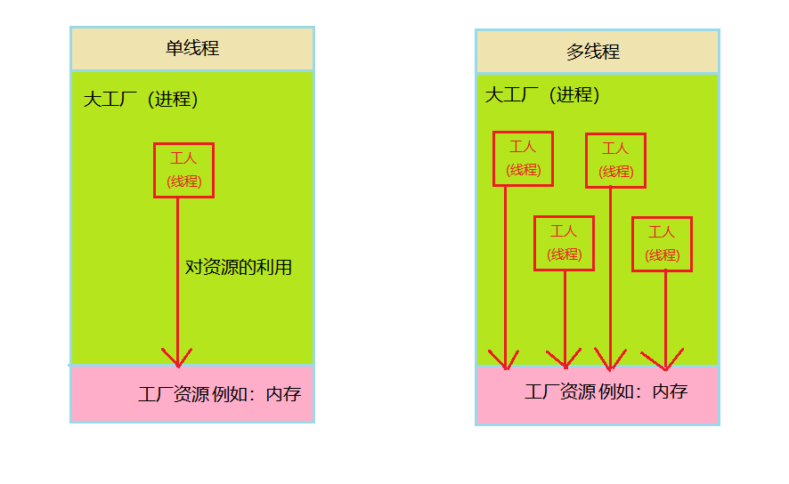
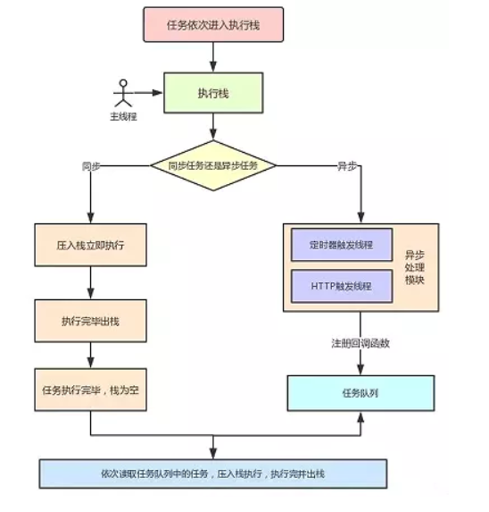
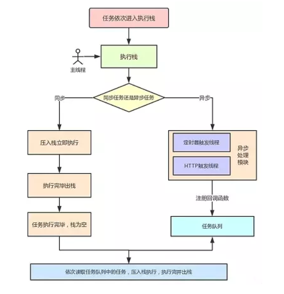
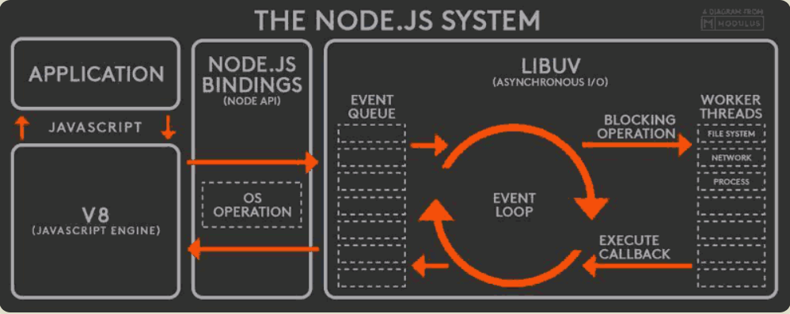
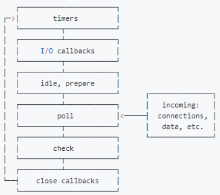
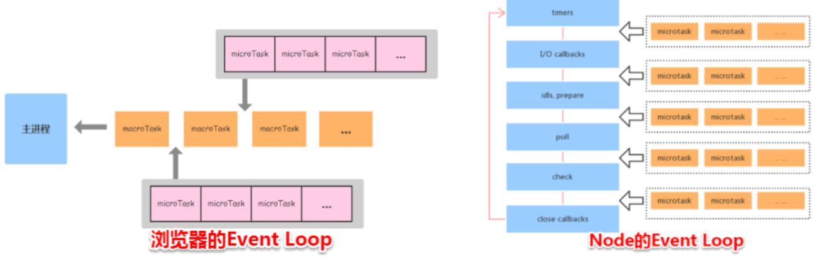

JavaScript的特点就是单线程，也就是说同一时间只能做一件事情，前面的任务没做完，后面的任务只能处于等待状态，（这就跟生活中的例子：排队买票一样，一个一个排队按顺序来）。这就产生了一个问题：为什么JavaScript不能是多线程的呢？多线程可以提高多核CPU的利用率，从而提高计算能力啊，这与浏览器的用途是息息相关的，也可以说是浏览器的用途直接决定了JavaScript只能是单线程。
假如说JavaScript是多线程，我们可以试想一下，如果某一时刻一个线程给某个DOM节点添加内容，另一个线程在删除这个DOM节点，这个时候浏览器听那一个线程的？这样会让程序变得非常复杂，而且完全没有必要。同时这也说明JavaScript的单线程与它的用途有关，浏览器的主要用途是操作DOM、与用户完成互动、添加一些交互行为，如果是多线程将会产生非常复杂的问题。所以JS从一开始起为了避免复杂的问题产生，JavaScript就是单线程的，单线程已经成为JavaScript的核心，而且今后也不会改变。
在多核CPU出现以来，这给单线程带来了非常的不便，不能够充分发挥CPU的作用。为了提高现代多核CPU的计算能力，HTML5提出了Web Worker标准，允许JavaScript脚本创建多个线程，但是，这个本质并没有改变JavaScript单线程的本质。
什么是单线程与多线程，这个问题值得我们思考？
单线程：一个进程中只有一个线程在执行，如果把进程比作一间工厂，线程比作一个工人，所谓单线程就是这个工厂中只有一个工人在工作
多线程：一个进程中同时有多个线程在执行，好比这个工厂中有多个工人在一起协同工作
进程：CPU资源分配的最小单位，一个程序要想执行就需要CPU给这个程序分配相应的资源出来，用完之后再收回去。例如：内存的占用，CPU给这个程序提供相应的计算能力。
线程：CPU调度的最小单位，一个程序可以理解为有N个任务组成的集合，某一时刻执行那个任务就需要线程的调度
图解：

注意点：有图可知：工厂空间是共享的，说明一个进程中可以存在一个或多个线程，工厂资源是共享的，说明一个进程的内存空间可以被该进程中所有线程共享，多个进程之间相互独立，例如：听音乐的时候，不会影响到敲代码，歌词是不会出现在代码编辑器中的。
多进程：在同一时间里，同一台计算机系统中允许两个或两个以上的进程处于运行状态，其实现在的计算机开机状态下就是多个进程在运行，打开任务管理器就可以看到那些进程在运行。多进程带来的好处是非常明显的，可以充分利用CPU的资源，而且电脑同时可以干很多件事还互相不影响。例如：在使用编辑器写代码的时候，还可以使用QQ音乐听歌。编辑器和QQ音乐之间完全不会影响。以Chrome为例：每打开一个tab就就相当于开启了一个进程，每个tab之间是完全不会影响。
上面提到HTML5的Web Worker可以改善单线程的不便，了解Web Worker需要注意以下几点：
同源限制
分配给Worker子线程运行的脚本文件，必须与主线程的脚本文件同源。
DOM限制
Worker线程与主线程不一样，无法读取主线程所在网页的DOM对象，无法使用 document 、 window 、 parent 等对象，但是可以使用 Navigator 对象、 location 对象
全局对象限制
Worker 的全局对象 WorkerGlobalScope ，不同于网页的全局对象 Window ，很多接口拿不到，理论上Worker不能使用 console.log
通信联系
Worker 线程和主线程不在同一个上下文环境，它们不能直接通信，必须通过消息完成。
脚本限制
Worker 线程不能执行alert()方法和confirm()方法，但可以使用 XMLHttpRequest 对象发出 AJAX 请求。
文件限制
Worker 线程无法读取本地文件，即不能打开本机的文件系统（file://），它所加载的脚本，必须来自网络。
二、浏览器的渲染流程
在理解渲染原理之前，先了解浏览器内核构成是非常有必要的，具体内容看下面：
浏览器工作方式：浏览器内核是通过取得页面内容、整理信息（应用CSS）、计算和组合最终输出可视化的图像结果。
浏览器内核是多线程的，在内核控制下各线程相互配合以保持同步，一个浏览器通常由以下常驻线程组成：
GUI渲染线程：
JS引擎线程
定时触发器线程
事件触发线程
异步http请求线程
三、任务队列
之前初步了解了浏览器的内核构成，提到了很多异步事件，那异步事件如何执行呢？这就跟任务队列有关了。现在来谈谈什么是任务队列，为什么需要任务队列？
单线程也就意味着所有任务都需要排队，只有在前一个任务结束之后，才会执行后一个任务，否则后面的任务只能处于等待状态。如果某个任务执行需要很长的时间，后面的任务就都需要等待着，这会造成非常大的交互影响，给用户有一种页面加载卡顿的现象，影响用户体验！
如果等待是因为CPU忙不过来也可以理解，大多数情况并不是CPU忙不过来的原因，而是文件I/O的读取，网络请求、鼠标点击事件等这些操作需要花费非常长的时间，只有等这些操作返回结果之后才能往下执行。
为了解决这个问题，JavaScript的开发者也很快的意识到，脚本文件的执行，完全可以不用管那些非常耗时的I/O设备，异步请求，完全可以挂起等待中的任务，执行排在后面的位置，等I/O操作返回结果之后，再回过头执行挂起的任务。
根据上面的理解可以将任务分为两种：同步任务（synchronize task）、异步任务（asynchronize task）。
浏览器的运行机制
四、事件和回调函数
任务队列是一个事件队列（也可以理解为：消息队列），异步操作如：I/O设备完成一项任务，就在任务队列中添加一个事件，表示相关的异步任务可以进入"执行栈"了。主线程读取"任务队列"，就是读取里面的事件。
任务队列中的事件，除了IO设备的事件以外，还包括一些用户产生的事件（比如鼠标点击、页面滚动等等）。只要指定过回调函数，这些事件发生时就会进入"任务队列，等待主线程读取。
所谓"回调函数"（callback），就是那些会被主线程挂起来的实现该任务的代码，主线程干开始运行的时候是不会执行的。异步任务必须指定回调函数，当主线程开始执行异步任务，就是执行对应的回调函数代码。
任务队列是一个先进先出的数据结构，排在前面的事件，优先被主线程读取。主线程的读取过程基本上是自动的，只要执行栈一清空，"任务队列"上第一位的事件就自动进入主线程。但是，由于存在后文提到的"定时器功能“”，主线程首先要检查一下执行时间，某些事件只有到了规定的时间，才能返回主线程。
五、浏览器中的事件循环（Event Loop）
主线程从"任务队列"中读取事件，这个过程是循环不断的，所以整个的这种运行机制又称为Event Loop（事件循环）
为了更好的理解事件循环，请看下面的图：

执行栈中的代码（同步任务），总是在读取"任务队列"（异步任务）之前执行。
Micro Task 和 Macro Task：
浏览器端事件循环的异步队列有两种：macro(宏任务)队列、micro(微任务)队列，macro队列可以有多个，micro队列只能有一个。
常见的Macro-Task: setTimeout、setInterval、script、I/O操作、UI渲染
常见的Micro-Task: new Promise.then() MutationObserve
现在再拿之前的图来解释任务执行的流程，进一步加深理解：
图解：

执行流程：
总结一下：当某个宏任务执行完后,会查看是否有微任务队列。如果有，先执行微任务队列中的所有任务，如果没有，会读取宏任务队列中排在最前的任务，执行宏任务的过程中，遇到微任务，依次加入微任务队列。栈空后，再次读取微任务队列里的任务，依次类推。
代码演示：
1 <script>
2 Promise.resolve().then(() => { // Promise.then()是属于micro-task
3 console.log('micro-task1');
4 setTimeout(() => { // setTimeout是属于macro-task
5 console.log('macro-task1');
6 }, 0)
7 })
8 setTimeout(() => {
9 console.log('macro-task2');
10 Promise.resolve().then(() => {
11 console.log('micro-task2');
12 })
13 console.log('macro-task3');
14 })
15 console.log('同步任务');
16 </script>
运行结果为：同步任务--->micro-task1 --->macro-task2--->macro-task3--->micro-task2--->macro-task1
1.代码开始执行，判断是同步任务还是异步任务，检测到有同步任务（属于宏任务）存在，先输出“同步任务”
2. 同步任务执行完去查看是否有微任务队列存在，上面代码的微任务队列为：promise.resolve().then()，开始执行微任务，输出micro-task1
3.执行微任务的过程中发现有宏任务setTimeout()存在，将其添加到宏任务队列，微任务执行完毕开始执行宏任务，由于macro-task2所在的宏任务早于macro-task1，因此先执行macro-task2所在的宏任务，输出macro-task2
4.输出macro-task2之后发现存在微任务micro-task2,将其添加到微任务队列，接着输出macro-task3
5.宏任务执行完毕，接着开始执行微任务输出:micro-task2
6.微任务执行完毕，接着执行macro-task1所在的宏任务，输出：macro-task1
7.执行完毕宏任务，此时的macro-task队列和micro-task队列已空，程序停止。
Node.js 不是一门语言也不是框架，它只是基于 Google V8 引擎的 JavaScript 运行时环境，同时结合 Libuv 扩展了 JavaScript 功能，使之支持 io、fs 等只有语言才有的特性，使得 JavaScript 能够同时具有 DOM 操作(浏览器)和 I/O、文件读写、操作数据库(服务器端)等能力，是目前最简单的全栈式语言。
目前Node.js在大部分领域都占有一席之地，尤其是 I/O 密集型的，比如 Web 开发，微服务，前端构建等。不少大型网站都是使用 Node.js 作为后台开发语言的，用的最多的就是使用Node.js做前端渲染和架构优化，比如 淘宝 双十一、去哪儿网的 PC 端核心业务等。另外，有不少知名的前端库也是使用 Node.js 开发的，比如，Webpack 是一个强大的打包器，React/Vue 是成熟的前端组件化框架。
Node.js通常被用来开发低延迟的网络应用，也就是那些需要在服务器端环境和前端实时收集和交换数据的应用（API、即时聊天、微服务）。阿里巴巴、腾讯、Qunar、百度、PayPal、道琼斯、沃尔玛和 LinkedIn 都采用了 Node.js 框架搭建应用。
Node.js 编写的包管理器 npm 已成为开源包管理了领域最好的生态，直接到2017年10月份，有模块超过47万，每周下载量超过32亿次，每个月有超过700万开发者使用npm。
当然了，Node.js 也有一些缺点。Node.js 经常被人们吐槽的一点就是：回调太多难于控制（俗称回调地狱）。但是，目前异步流程技术已经取得了非常不错的进步，从Callback、Promise 到 Async函数，可以轻松的满足所有开发需求。
至于其他的特性这里附一篇很值得一看的文档：https://cnodejs.org/topic/5ab3166be7b166bb7b9eccf7
Node中的事件循环机制完全和浏览器的是不同的，Node.js采用V8作为js的解析引擎，而I/O处理方面使用了自己设计的libuv，libuv是一个基于事件驱动的跨平台抽象层，封装了不同操作系统一些底层特性，对外提供统一的API，事件循环机制也是它里面的实现。

Node.js的运行机制如下：
1.V8引擎解析JavaScript脚本
2.解析后的代码，调用Node API
3.libuv库负责Node API的执行。它将不同的任务分配给不同的线程，形成一个Event Loop（事件循环），以异步的方式将任务的执行结果返回给V8引擎
4.V8引擎再将结果返回给用户
EventLoop的六个阶段
libuv引擎中的事件循环分为 6 个阶段，它们会按照顺序反复运行。每当进入某一个阶段的时候，都会从对应的回调队列中取出函数去执行。当队列为空或者执行的回调函数数量到达系统设定的阈值，就会进入下一阶段。

从上面的图片可以大致看出node的事件循环的顺序为：外部输入阶段--->轮询阶段（poll）--->检查阶段--->关闭事件回调阶段（close callback）--->定时器检查阶段（timer）--->I/O回调阶段（I/O callback）--->闲置阶段（idle,prepare）--->轮询阶段 ，按照上面的顺序循环反复执行。
timer阶段：这个阶段执行setTimeout或setInterval回调，并且是有poll阶段控制的。同样在Node.js中定时器指定的时间也不是非常准确，只能是尽快执行。
I/O callbacks阶段：处理一些上一轮循环中少数未执行的I/O回调
idle,prepare阶段：进node内部使用
poll阶段：获取新的I/O事件，适当的条件下node将阻塞在这里
check阶段：setImmediate()回调函数的执行
close callbacks阶段：执行socket的close事件回调。
注意点：上面的6个阶段都是不包括process.nextTick(),在日常的开发中我们使用最多的就是:timer poll check这三个阶段，绝大多数的异步操作都是在这三个阶段 完成的。
timer阶段：这个阶段执行setTimeout或setInterval回调，并且是有poll阶段控制的。同样在Node.js中定时器指定的时间也不是非常准确，只能是尽快执行。
poll阶段：
1.这个阶段是至关重要的阶段，系统会做两件事情。一是回到timer阶段执行回调，二是执行I/O回调
2.如果在进入该阶段的时候没有设置timer，会发生两件事情：
2.1.如果poll队列不为空，会遍历回调队列并同步执行，直到队列为空或达到系统限制
2.2.如果poll阶段为空，会发生下面两件事：
2.2.1：如果有setImmediate()回调需要执行，poll阶段会停止，进入到check阶段执行回调
2.2.2：如果没有setImmediate()回调需要执行，会等到回调被加入队列中并立即执行回调，这里同样有个超时限制防止一致等待下去
3.如果设置了timer且poll队列为空，则会判断是否有timer超时，如果有的话回到timer阶段执行回调。
check阶段：setImmediate()的回调会被加入到check队列中，从event loop的阶段图可以看出，check阶段的执行是在poll阶段之后的。
microTask和macroTask:
1.常见的micro-task: process.nextTick() Promise.then()
2.常见的macro-task: setTimeout、setIntevaral、setImmeidate、script、I/O操作
3.先分析一段代码示例：
console.log('start');
setTimeout(() => {
console.log('time1');
Promise.resolve().then(() => {
console.log('promise1');
})
}, 0)
setTimeout(() => {
console.log('time2');
Promise.resolve().then(() => {
console.log('promsie2');
})
}, 0)
Promise.resolve().then(() => {
console.log('promise3');
})
console.log('end');
// Node中的打印结果：start--->end--->promise3--->time1--->timer2--->promise1--->promise2
// 浏览器中的打印结果：start--->end--->promise3--->time1--->promise1--->time2--->promise2
4.node打印结果分析：
1.先执行同步任务（执行macro-task），打印输出：start end
2.执行micro-task任务:输出promise3，这一点跟浏览器的机制差不多
3.进入timer阶段执行setTimeout(),打印输入time1,并将promise1放入micro-task队列中，执行timer2打印time2，并且将promise2放入到micro队列中，这一点跟浏览器的差别比较大，timer阶段有几个setTimeout/setIntever就执行几个，而不像浏览器一样执行完一个macro-task之后立即执行一个micro-task
5.setTimeout()和setImmediate()非常相似，区别主要在调用的实际不同
5.1：setTimeout()设置在poll阶段为空闲时且定时时间到后执行，但它们在timer阶段执行
5.2：setImmediate()设置在poll阶段完成时执行，即check阶段执行
5.3：实例分析：
1 setImmediate(() => {
2 console.log('setImmediate');
3 })
4 setTimeout(() => {
5 console.log('setTimeout');
6 }, 0)
5.4：上面的代码执行，返回结果是不确定的，有可能先执行setTimeout() ，有可能先执行setImmediate()，首先 setTimeout(fn, 0) === setTimeout(fn, 1)，这是由源码决定的 进入事件循环也是需要成本的，如果在准备时候花费了大于 1ms 的时间，那么在 timer 阶段就会直接执行 setTimeout 回调，如果准备时间花费小于 1ms，那么就是 setImmediate 回调先执行了，可以把setTimeout的第二个参数设置为:1 ,2,3,4....看看运行结果
5.5：当二者写在I/O读取操作的回调中时，总是先执行setImmediate()，因为I/O回调是写在poll阶段，当回调执行完毕后队列为空，发现存在 setImmediate 回调，所以就直接跳转到 check 阶段去执行回调了
1 const fs = require('fs')
2 fs.readFile(__filename, (err, data) => {
3 setTimeout(() => {
4 console.log('setTimeout');
5 }, 0)
6 setImmediate(() => {
7 console.log('setImmediate');
8 })
9 })
10 console.log(__filename); // 打印当前文件所在的路径6.process.nextTick()：这个函数其实是独立于 Event Loop 之外的，它有一个自己的队列，当每个阶段完成后，如果存在 nextTick 队列，就会清空队列中的所有回调函数，并且优先于其他 microtask 执行。也就是说它指定的任务队列，都是在所有异步任务之前发生
1 console.log('start')
2 setTimeout(() => {
3 console.log('time1');
4 Promise.resolve().then(() => {
5 console.log('promise1');
6 })
7 })
8 Promise.resolve().then(() => {
9 console.log('promise2');
10 })
11 process.nextTick(() => {
12 console.log('nextTick1');
13 process.nextTick(() => {
14 console.log('nextTick2');
15 process.nextTick(() => {
16 console.log('nextTick3');
17 })
18 })
19 })
20 console.log('end');
21 // 运行结果：start --->end --->nextTick1 --->nextTick2 --->nextTick3 --->promise2 --->time1 --->promise1重点：浏览器环境下，microtask的任务队列是每个macrotask执行完之后执行。而在Node.js中，microtask会在事件循环的各个阶段之间执行，也就是一个阶段执行完毕，就会去执行microtask队列的任务。
图解：

代码演示：
console.log('start');
setTimeout(() => {
console.log('timer1');
Promise.resolve().then(() => {
console.log('promise1');
});
})
setTimeout(() => {
console.log('timer2');
Promise.resolve().then(() => {
console.log('promise2');
})
}, 0)
console.log('end');
// 浏览器模式下输出：start ---> end ---> timer1 ---> promise1 ---> timer2 ---> promise2
// node环境下面：start ---> end ---> timer1 ---> timer2 ---> promsie1 ---> promise2浏览器和node环境下、micro-task队列的执行时机不同：
浏览器端，微任务在事件循环的各个阶段执行。
Node端，微任务是在macro-task执行完毕执行。